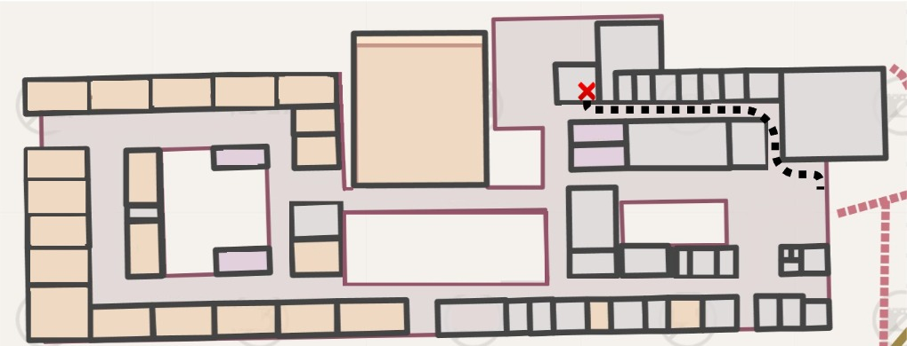

Grêmio Estudantil
O Grêmio Estudantil do IFRN é a entidade que representa os estudantes, atuando como um canal de diálogo entre a comunidade estudantil e a instituição. Ele tem a função de defender os interesses dos alunos, participar das decisões que envolvem a vida escolar e promover a integração entre os estudantes. Além disso, o grêmio organiza atividades culturais, esportivas, sociais e educativas, incentivando a participação ativa dos alunos em debates, projetos e ações que contribuem para o desenvolvimento coletivo. Também pode atuar na reivindicação de melhorias na infraestrutura, na qualidade do ensino e em questões que impactam diretamente a rotina escolar.
